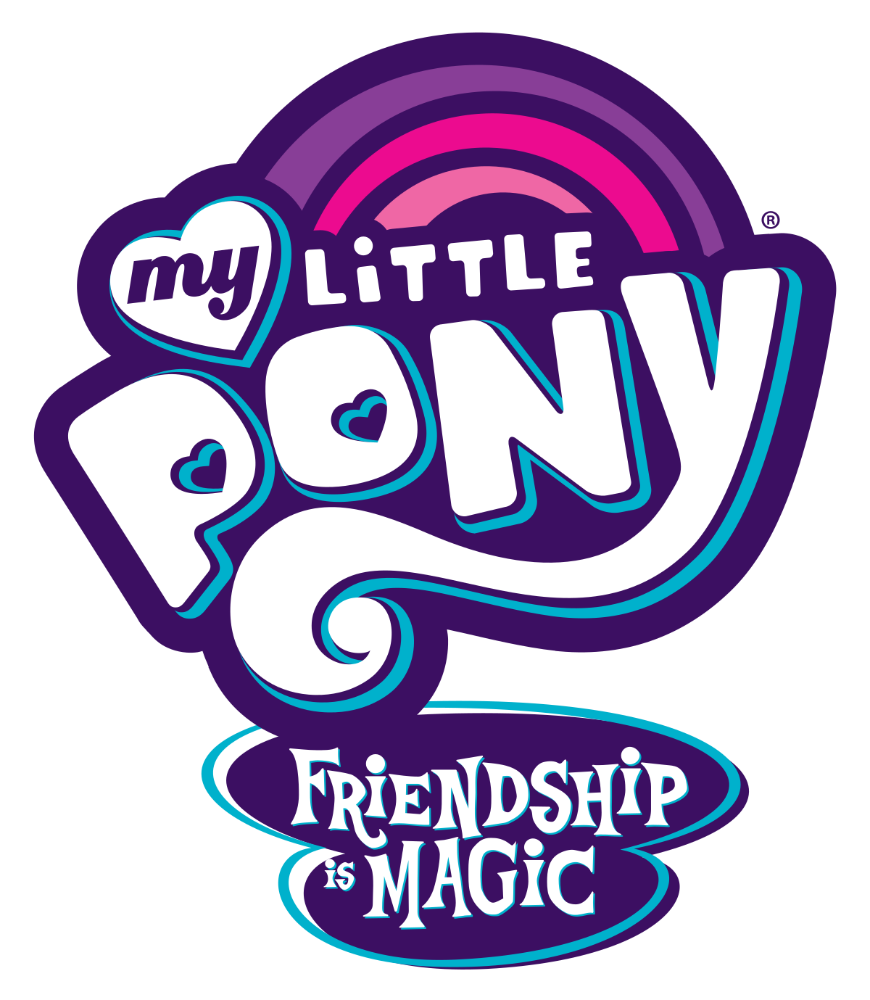

Introducción
MLP:FIM es una serie para niños de 7 a 12 años transmitida el 10 de junio de 2010, finalizando en octubre de 2019, con 9 temporadas y un total de 225 episodios, 1 película, 1 franquicia, 5 especiales, varias series de cómics e infinidad de mercancía. Ha sido la infancia de millones de niños alrededor del mundo, incluyendo la mía, desde hace ya varias generaciones, y eso me llevó a crear esta página."
¿Por qué elegí My Little Pony?
Decidí hablar de esta serie infantil porque representó gran parte de mi infancia y hoy en día aún le guardo un gran aprecio. A pesar de ser una serie para niños, puede llegar a ser muy entretenida para toda la familia y personas de todas las edades, está llena de varias enseñanzas tanto para niños como para adultos.